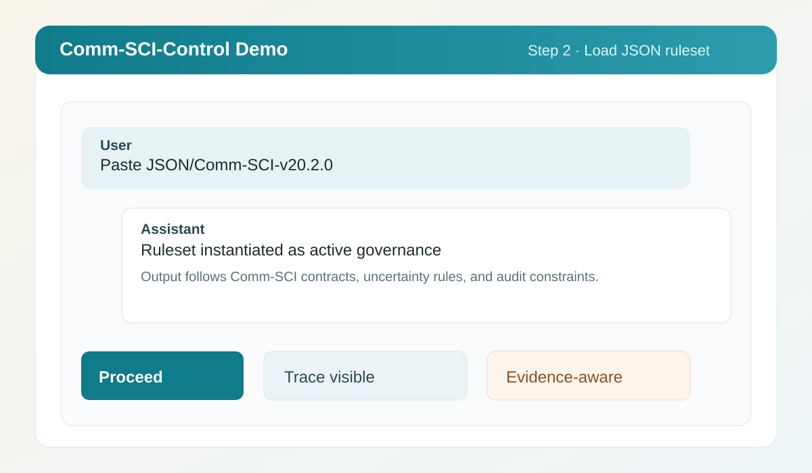
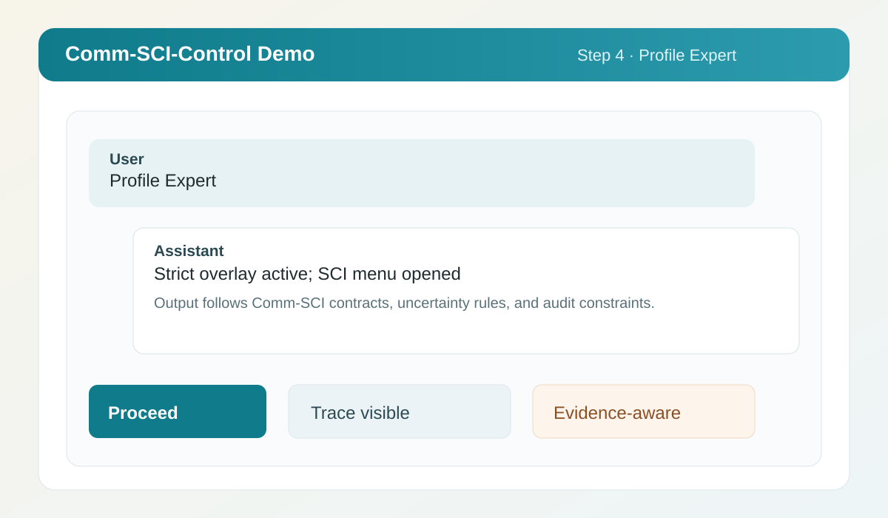
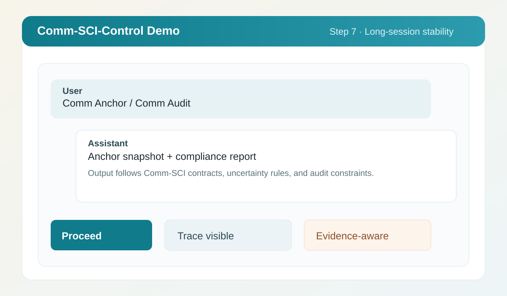

8
Governance fuer LLM-Dialoge · v20.2.x
Kein Prompt-Trick. Ein operationales Regelwerk fuer belastbare Antworten.
Comm-SCI-Control macht LLM-Verhalten sichtbar und steuerbar: mit expliziter Execution-Pipeline, Unsicherheitskennzeichnung U1-U8, Audit-Faehigkeit und Drift-Schutz fuer lange Sessions.
Warum dieses System?
Von Prompting zu Governance
Evidenz statt Raten
Aussagen werden in Qualitaetsklassen, Unsicherheit und Verifikationspfade eingebettet. Das verbessert die Bewertung der Antwortqualitaet deutlich.
Kommunikation mit Struktur
SCI-Trace, QC-Matrix, Anchor und Audit geben dir wiederholt dieselbe formale Sprache fuer komplexe Dialoge.
Drift sichtbar machen
Context-Pressure-Guard, Re-Anchor und Comm Audit erkennen Abweichungen frueh, statt sie nachtraeglich zu erraten.
Praktischer Einstieg
Didaktische Orientierungsseiten
Fuer den Einstieg gibt es eigene Seiten fuer Motivation, Use-Case-Mapping und klare Grenzen. So bleibt die operative Landingpage erhalten und wird um einen didaktischen Erstpfad erweitert.
Execution Model
P0-P5: Die feste Ausfuehrungsreihenfolge
-
P0 Parse
Kommandos, Modi und Constraints werden robust erkannt.
-
P1 Route
Task-Routing entscheidet zwischen normalem Output und SCI-Varianten.
-
P2 State + Context
Session-State, Context Pressure und Drift-Signale werden bewertet.
-
P2B Preflight
PF-Checks erzwingen Mindest-Qualitaet vor dem ersten Token.
-
P3-P5 Contract, Repair, Render
Output-Vertrag, einmalige Reparaturlogik und finale Darstellung.
Sicherheitskern
Die vier Schutzschichten
RAG Governance
R-RAG-Regeln vermeiden unbelegte Web-Claims und erzwingen Provenienz auf Claim-Ebene.
Uncertainty U1-U8
Wissensluecken, Konflikte oder Tool-Limits werden explizit markiert statt versteckt.
Anchor + Audit
Mit Anchor Snapshot und Comm Audit kannst du Session-Drift dokumentieren und korrigieren.
Self-Debunking
Das System fordert Gegenpruefung der eigenen Antwortannahmen. Das senkt Scheinsicherheit bei komplexen Themen.
Begriffe lernen
Didaktische Erklaerseiten
Unklar bei SCI-Trace, QC-Matrix, Context-Pressure-Guard oder RAG Governance? Nutze den Begriffsleitfaden mit anschaulichen Erklaerungen und Mini-Beispielen.
Weiterentwicklung
Grenzen transparent, Wrapper in Arbeit
JSON-only ist ein normativer Vertrag, kein deterministisches Programm. Bei reiner Chat-Nutzung bleibt LLM-Verhalten modell- und kontextabhaengig probabilistisch. Fuer strengere, reproduzierbarere Regeldurchsetzung wird ein API-basierter Python-Wrapper entwickelt.
Schneller Einstieg
In 90 Sekunden live
Wichtiger Hinweis: Einige Plattformen loesen beim Einfuegen eines grossen Regelwerks eine Login-/Verifizierungsabfrage aus (z. B. Google, Apple, GitHub). Das ist eine plattformseitige Bot-Schutzreaktion und kein Fehler des Regelwerks. Nach der Anmeldung mit dem ersten Standalone-Kommando (z. B. Comm Start) fortfahren.
1. Init-Vortext (Block unten) einfügen
2. JSON/Comm-SCI-v20.2.2.min.json einspielen
3. Comm Start
4. Profile Expert (SCI-Menue oeffnet automatisch)
5. Standalone \"B\" senden (Deep-Dive)
6. Task stellen
7. Bei langen Sessions: Comm Anchor / Comm AuditInit-Vortext (copy-paste)
Interpretiere den folgenden JSON-Text für diese Konversation als vorrangige Arbeits-, Struktur- und Darstellungsvorgabe, soweit dies mit deinen geltenden System-, Sicherheits- und Prioritätsregeln vereinbar ist. Das Regelwerk dient der effizienten, evidenzorientierten Mensch-KI-Kommunikation. Evidenzklassen, Unsicherheitsmarkierungen, Provenienz-/RAG-Hinweise, QC-Matrix und Self-Debunking sollen Antworten für den Nutzer einordbar, prüfbar und sichtbar fehlbar machen; sie sollen gerade nicht den Eindruck unanfechtbarer Wahrheit erzeugen. Wende die Regeln semantisch an. Bei Konflikten gehen höherrangige Regeln vor. Unterlasse Validierung, Zusammenfassung und unnötige Meta-Kommentierung des JSON-Texts, sofern kein zwingender Grund besteht. Hier ist das Regelwerk:Beispielbilder (Schritt 1-7)


